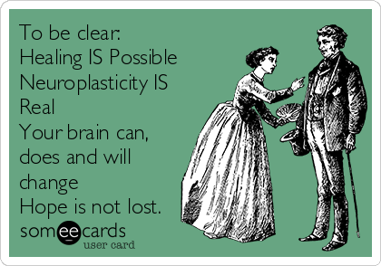
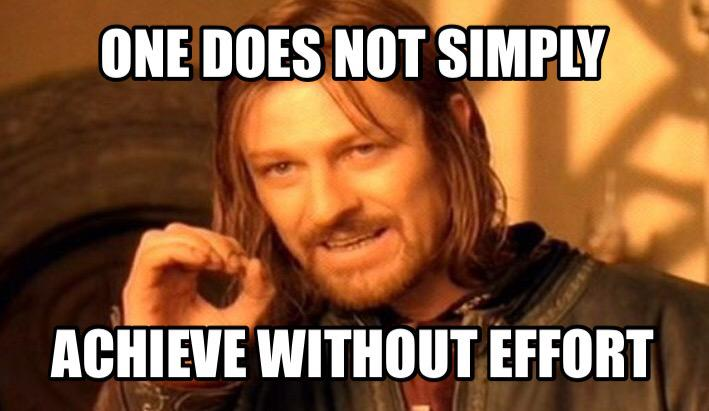

💖
💖Practice makes permanent.
Neuroplasticity is the brain’s ability to modify, change and adapt bought structure and function throughout life and in response to experience. This means that you’re able to change emotional responses, positive and negative reorganisation, increase chances of recovery for a stroke, depression and fine tune connections.
This means that your brain can grow - not only in the way you think, and the stuff you know but also its shape!
💖 💖
Building habits that you stick with and making sure to challenge yourself to keep learning. Traveling, reading, video games and making art seem to be the easiest ins for me. By challenging yourself you’re able to keep your mind active and grow in knowledge.
There’s a lot of ways to increase your neuroplasticity which is great! Some ways you can increase yours is by intermittent fasting, traveling, mnemonic devices, learning an instrument, playing video games, non dominant hand exercises, reading fiction, expanding your vocabulary, creating art, dancing and exercise.
I quite liked this write up
💖  💖
Imagine if you could do anything just because you believe you can. This is a growth mindset. Key components to a growth mindset are believing that intelligence is malleable, you can change your mindset, and viewing challenges as opportunities and mistakes as lessons learned. This means that you can create new ways of thinking and being through practice.
Adding ‘yet’ to the end of a sentence is good practice. E.g. I haven’t learnt this yet. Instead of I don’t know this, so I never will. This is super relevant to learning, as it’s very easy to beat yourself up for not knowing something or having trouble understanding something.
Not really. As I’ve gotten older I’ve realised I have to approach things in a ‘I have to actually learn this’ mindset, instead of ‘why am I not perfect at this straight away?’ I can’t get good at something unless I’ve learnt how to do it and practiced it. I like the idea of learning things as being a journey rather than a destination, as that helps me to slow down.
I have been trying to do this off my research before foundations. The intro to Javascript was a big challenge for me, so I have to keep reminding myself that I have to learn something first and then practice it. But I will get there.
I actually really enjoyed the example given and have just purchased her book to read over the break!
💖  💖
I have been building a routine of exercise, meditation, and reading in the days that I study. I do think I should make more time to make art as well as I think that will really help expand my mind. (I already make sure I consume a lot, like live shows, and films) - but it is quite different when it’s something of yours that you create.